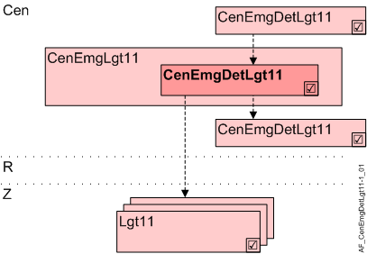

Central emergency detector lighting (CenEmgDetLgt11)
Overview
Application function "Central emergency detector for lighting 11" (CenEmgDetLgt11) handles automatic emergency operation using an emergency detector.

Cen | Central functions |
CenEmgLgt11 | Central emergency lighting 11 |
CenEmgDetLgt11 | Central emergency detector for lighting 11 |
R | Room |
Z | Lighting zone in one room segment |
Lgt11 | Lighting 11, group members |
Function
Lighting is switched automatically using an emergency detector or potential-free contact of a danger management system.
Lighting goes to the level defined in CenEmgCmdLgt during an emergency.
Hierarchical grouping
This AF supports hierarchical grouping. For detailed information, see Hierarchical grouping.
Configuration
None.
Interface
Interface | Description | Type | Ref. | Owner |
|---|---|---|---|---|
LgtEmgDet | Emergency detector for lighting | BI | ◉ | Central function / Device |
Engineering and commissioning
This AF requires CenEmgCmdLgt11.